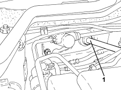
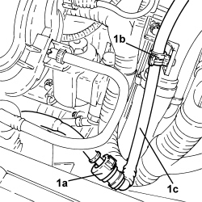

3330D21 SINGLE-ACTING VALVE FOR BRAKE SERVO - R.R. FOR RIGHT HAND DRIVE VERSIONS
- Path
- Procedures > 33 BRAKES > 3330 HYDRAULIC BRAKING SYSTEM > 3330D BRAKE VACUUM SYSTEM > 3330D21 SINGLE-ACTING VALVE FOR BRAKE SERVO - R.R. FOR RIGHT HAND DRIVE VERSIONS
- Kind
- repair procedure (removal / refitting; the operation number is the code)
- Applies to
- engines: 2.2 JTS; all production periods
- Interactive page
- https://sloeber94.github.io/elrnDB-aBrrSpdr/en/#/946004014
Applies to: engines: 2.2 JTS; all production periods
 Removing
Removing
 Refitting
RefittingOp. 1016A10 SOUND-PROOFING COVER - R.R
- Unscrew the engine coolant reservoir fixing nuts and move it aside.
1. Using the tool, disconnect the single-acting valve from the brake servo.
Tool | Description | Function | Validity |
|---|---|---|---|
1823015000 | Knife | Retainer removal |

Applies to: engines: 2.2 JTS; all production periods
1. Disconnect the rapid connector (1a), open the retaining clips (1b) and remove the single-acting valve complete with pipe (1c).

Applies to: engines: 2.2 JTS; all production periods
Refitting
Removing- Connect the single-acting valve, complete with pipe, to the brake servo.
- Connect the rapid connector for the vacuum pipe, air chamber side.
- Close the brake servo vacuum pipe retaining clips.
- Place the engine coolant supply reservoir back in its housing and secure it using the nuts.